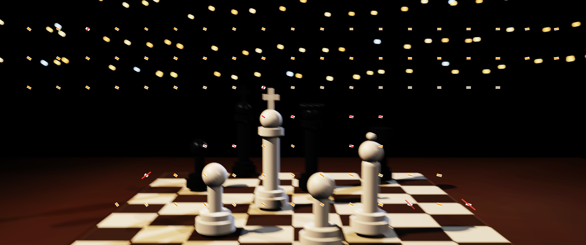
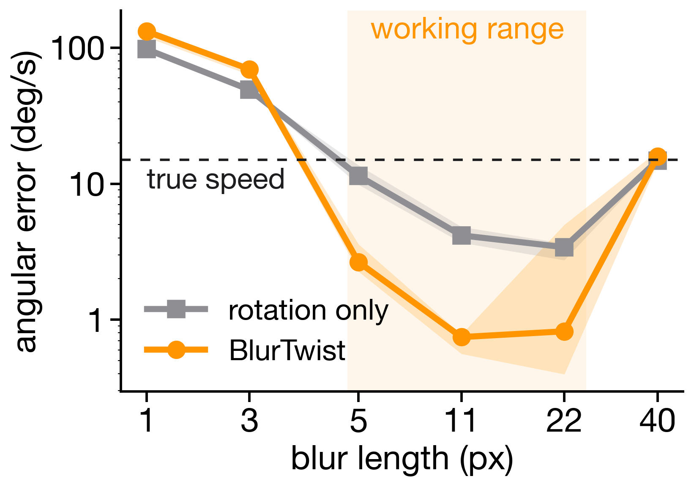
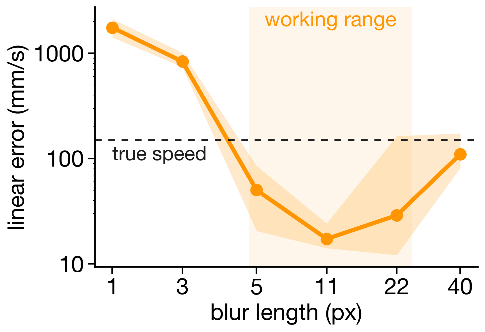
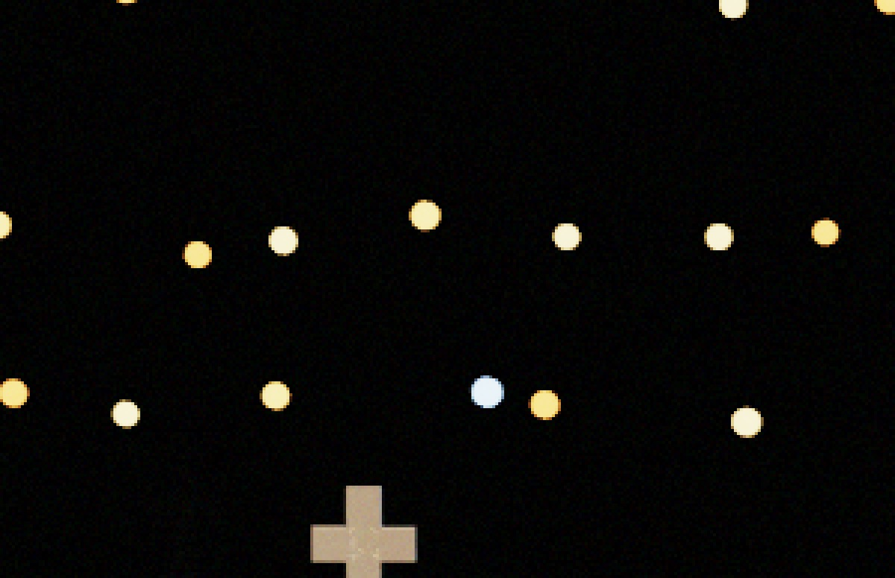
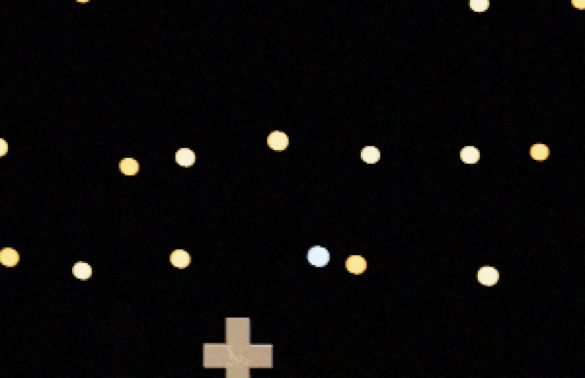
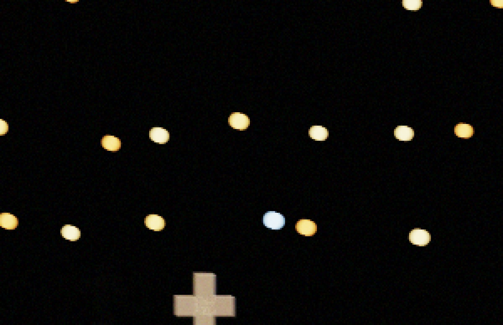
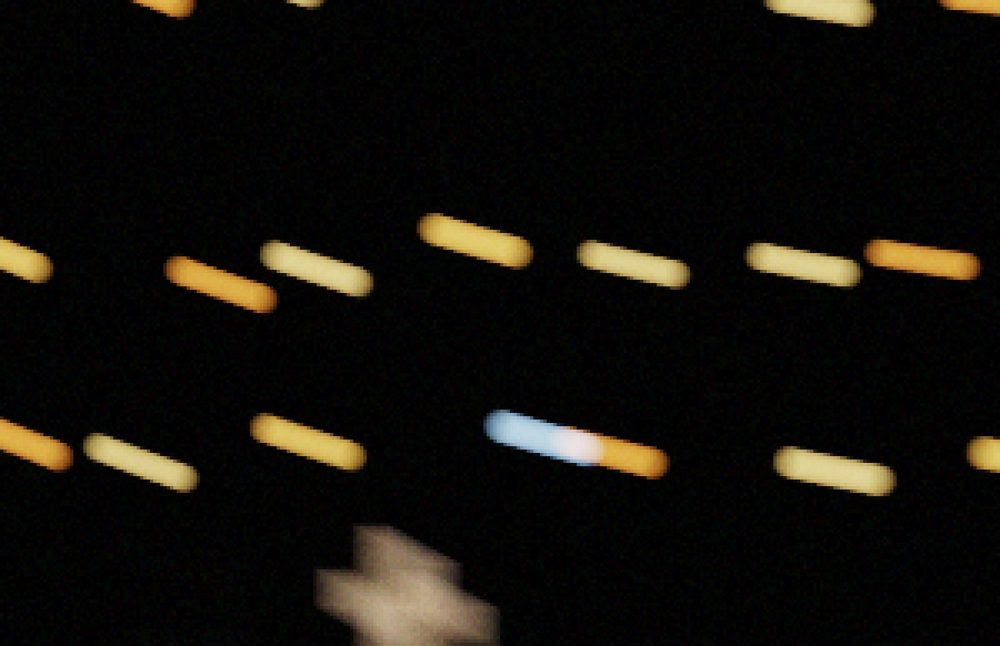

Computational imaging · CSC2529 · University of Toronto · 2026
One blurred photo is a speedometer.
Motion blur records how the camera moved. BlurTwist reads it back: all six numbers, from a single frame.
Motion blur records how the camera moved. BlurTwist reads it back: all six numbers, from a single frame.
It knows exactly how the camera moved, so the photo can be checked.


The cepstrum of each patch peaks at its blur vector.
d = τ J(x, Z) ξ
Streak = shutter × geometry × motion.
A robust fit over the patches gives the motion.
72 photos. 12 motions, 6 shutter speeds.







